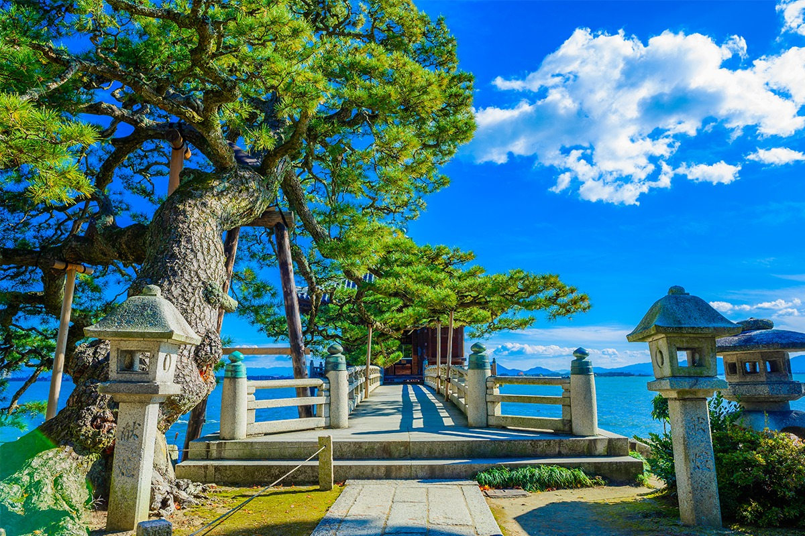
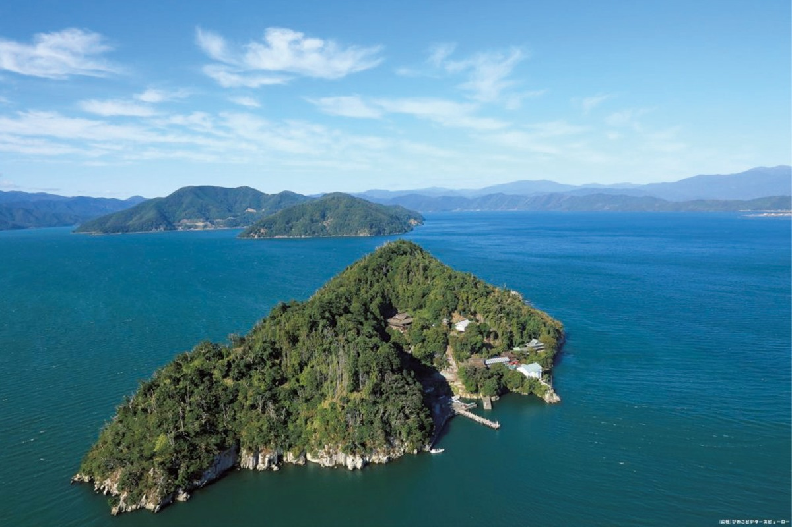
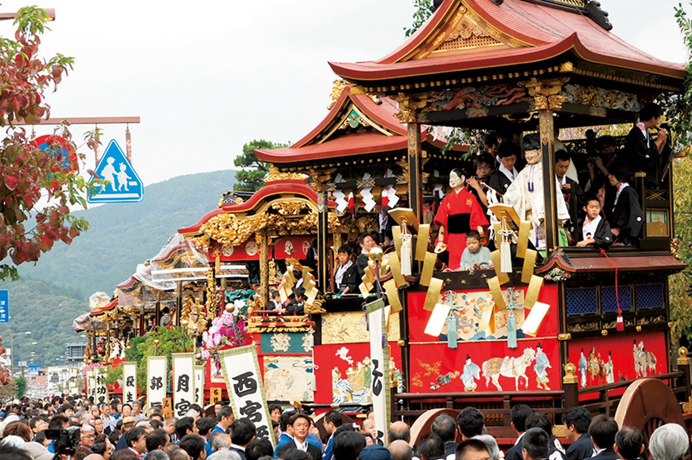
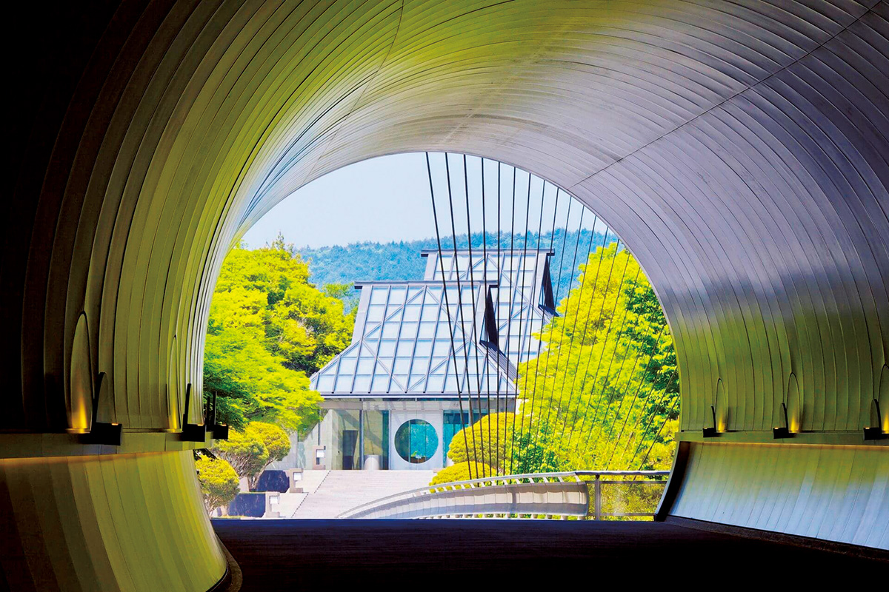
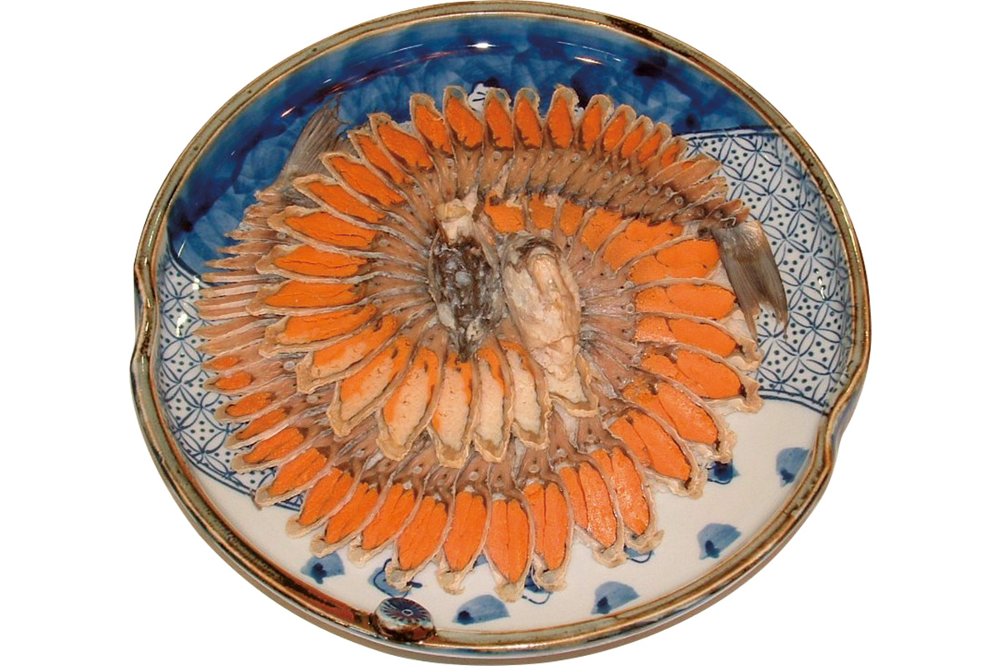
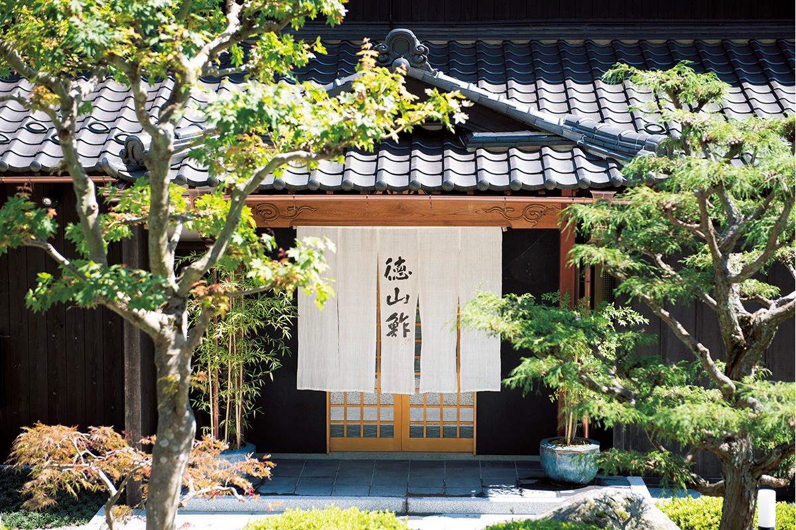
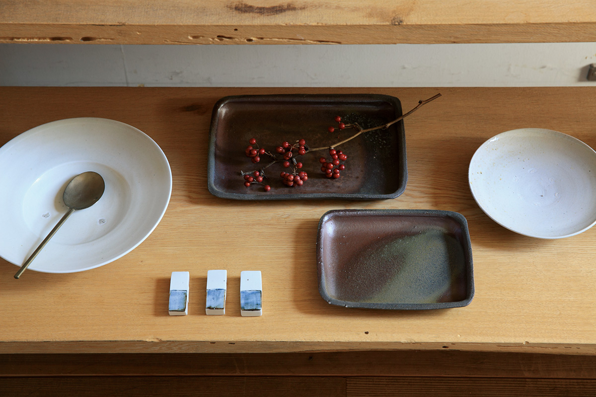
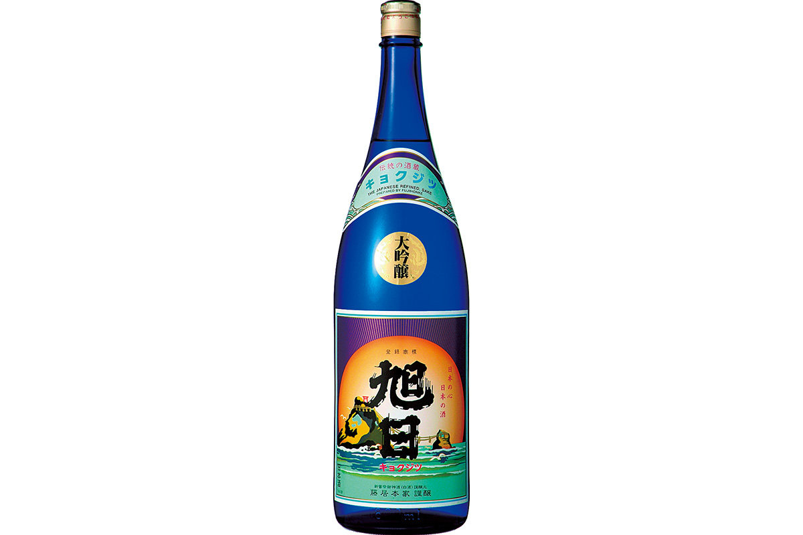
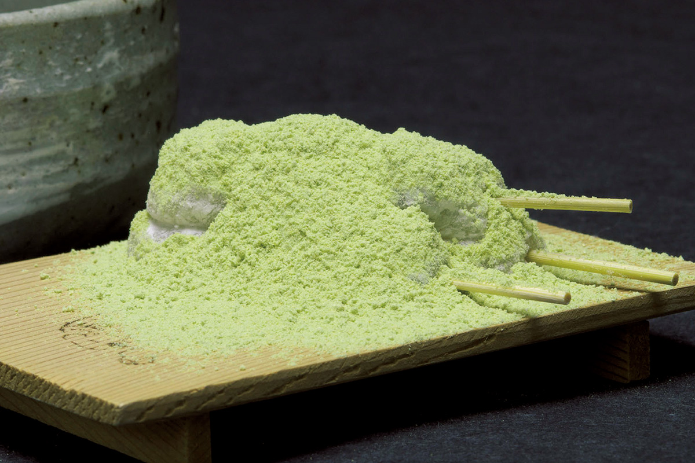

Префектура Сига
Сига: озеро Бива, музей в горе и самые старые суши

Каменный мост ведёт через воду к павильону у самого берега, рядом стоят подстриженные сосны и каменные фонари.
Озеро Бива занимает шестую часть префектуры, вокруг него судят о погоде и варят сакэ, а в горах прячется музей, к которому ведёт тоннель. Рассказываем, за чем ехать в Сигу.
О префектуре
Внутренняя земля вокруг большого озера
Сига не выходит к морю, зато в её центре лежит Бива, самое большое озеро страны: оно занимает примерно шестую часть площади префектуры. Даже герб Сиги, где круг соединяется с крыльями, собран из двух знаков японской азбуки, и круг в середине это озеро.
Через эти места веками шли люди и товары, поэтому Сига была важным перекрёстком. В эпоху воюющих провинций здесь строили замки, в том числе крепость Адзути Оды Нобунаги, и решали судьбу страны в битвах вроде сражения при Сидзугатакэ. Отсюда же родом поговорка «спеши, обходя», которую в Японии знают все: в эпоху Муромати безопаснее и в итоге быстрее было не переплывать озеро на лодке, а идти в обход через мост Сэта-но Карахаси в городе Оцу.
Виды на озеро меняются по сезонам. Восемь самых красивых мест выбрали всенародным голосованием и назвали «восемью видами Бивы»: среди них скалы Кайдзу-осаки, леса на горе Хиэй и старый замок в Хиконэ.
Что посмотреть
Остров, который считают святым
Тикубусима
Небольшой остров из цельного гранита около двух километров в окружности лежит прямо в озере Бива. На нём стоят храм Хогон-дзи и святилище Цукубусума, и место известно как источник силы, куда приезжают за удачей.

- Справки
- туристическая ассоциация Нагахамы
- Телефон
- +81 749-65-6521
Что ещё посмотреть
- Замок Хиконэ, крепость с уцелевшей главной башней
- Энряку-дзи, главный храм школы Тэндай на горе Хиэй
- Руины замка Адзути, место, где стояла крепость Оды Нобунаги
Праздники
Тринадцать повозок в духе Киото
Оцу-мацури
Этот праздник перенял облик и настроение столичного праздника Гион в Киото. По улицам Оцу идут тринадцать повозок хикияма: их украшают гобелены и точёные металлические детали, и зрелище считают одним из самых роскошных в стране.

- Период
- октябрь
- Место
- Центральная улица у станции Оцу и окрестности
Другие праздники
- Санно-мацури, праздник у святилища Хиёси-тайся
- Нагахама-хикияма-мацури, весенний парад повозок с куклами
- Явата-мацури, праздник с шествием и музыкой
Музеи и архитектура
Музей, который прячется в горе
MIHO MUSEUM
В собрании музея японское искусство и древнее искусство разных стран. Здание спроектировал архитектор И. М. Пэй, взяв за образец страну персикового источника, то есть легендарный идеальный мир из китайского предания: посетитель идёт по тоннелю и мосту и только потом попадает в залы.

- Адрес
- 300 Tashiro Momodani, Shigaraki-cho, Koka, Shiga
- Телефон
- +81 748-82-3411
- Сайт
- miho.or.jp/
Что ещё посмотреть
- Музей озера Бива, экспозиция о природе и истории озера
- Музей искусств Сагава, собрание японской живописи и керамики
- Ла Корина в Омихатимане, кондитерское производство и парк при нём
Местная кухня
Самое старое суши страны
Фуна-дзуси
Готовят его так: карася сначала солят, а потом закладывают в рис и оставляют бродить, и в блюде размножаются молочнокислые бактерии. Фуна-дзуси ели здесь уже в эпоху Хэйан, поэтому его называют самыми старыми суши в Японии.

Что ещё попробовать
- Оми-гю, мраморная говядина из Сиги
- Угорь «дзюндзюн», угорь, тушённый вместе с рисом
- Рис с бивамасу, рис, сваренный с местной озёрной форелью
Где поесть
Оберж у тихого озера Ёго
Токуяма-дзуси
Это японский оберж, то есть загородный дом с рестораном: гостей кормят блюдами из даров озера, рек и гор, а из окон видно спокойное озеро Ёго. Местная гордость здесь это наридзуси, то есть рыба, которую долго выдерживают в рисе, и её подают сразу в двух вкусах.

- Адрес
- 1408 Kawaminami, Yogo-cho, Nagahama, Shiga
- Телефон
- +81 749-86-4045
- Часы
- с 12:00 до 14:30 и с 18:00 до 21:00
- Выходные
- нерегулярные
Ремёсла
Галерея, где посуда ждёт хозяина
Посуда «Кино кумо»
В Нагахаме работает галерея, где собраны работы больше восьмидесяти мастеров. Хозяева галереи, супруги Накамура, давно дружат с современными керамистами, поэтому здесь много вещей, которых нет в обычных магазинах.

- Телефон
- +81 749-68-6072
- Сайт
- tokinokumo.com/
Что привезти
Сакэ и сладость с берегов Бивы
Дайгиндзё «Кёкудзицу» завода Фудзии-хонкэ
Завод основан в 1831 году. Для сакэ берут подземную воду реки Айти и рис ямада-нисики, выращенный в префектуре; бутылка 720 миллилитров стоит 2090 иен.

- Телефон
- +81 749-42-2080
- Сайт
- fujiihonke.jp/
Тикара-моти из Мии-дэры
Название этой сладости связано с храмом Мии-дэра и силой монаха-воина Бэнкэя. Рисовые лепёшки на палочках поливают сиропом мицу и посыпают соевой мукой кинако; набор из семи штук стоит 770 иен.

- Телефон
- +81 77-524-2689
Где остановиться
Рёкан, где ванна есть в каждом номере
Бэниаю
Это онсэн-гостиница на берегу озера. В каждом номере есть свой открытый ванный чан с видом на воду и на остров Тикубусима, а на ужин подают блюда из продуктов края Оми.
- Адрес
- 312 Onoe, Kohoku-cho, Nagahama, Shiga
- Телефон
- +81 749-79-0315
- Комнат
- 15
- Цена
- от 24 350 иен за ночь с двумя приёмами пищи, налоги и сбор включены
- Сайт
- beniayu.com/
Местный диалект
Как здесь говорят «очень вкусно»
- умайдээочень вкусно
- иэ э инуиду домой
- уми ва ооарэ яозеро разбушевалось
- сирантэтане знал
Рекорды
В чём Сига первая
- №1 площадь природных парков: первое место в стране
- №1 доля домохозяйств с оптическим интернетом: первое место
- №1 в мире самый глубокий снег на горе Ибуки: 1182 сантиметра
Вопросы и ответы
Что ещё спрашивают о Сиге
Какой единственный храм префектуры внесён в список Всемирного наследия?
Энряку-дзи на горе Хиэй, главный храм школы Тэндай. Его история и традиция насчитывают 1200 лет, и в 1994 году храм внесли в список Всемирного культурного наследия.
Как называется онсэн, который называют источником для детей?
Нагахама-тайко-онсэн. Его связывают с именем Тоётоми Хидэёси. Вода в нём коричневая, потому что это железистый источник, и после купания тело долго остаётся тёплым.
Справочник
Сига в цифрах
Общие сведения
| Административный центр | Оцу |
| Муниципалитеты | 13 городов, 6 посёлков |
| Площадь | 4017 кв. км |
| Население | 1,41 млн человек |
| Плотность населения | 351,5 человека на кв. км |
| Туристов в год | 17,64 млн |
| Дерево префектуры | клён момидзи |
| Цветок префектуры | рододендрон сякунагэ |
| Птица префектуры | поганка кайцубури |
Климат
| Средняя температура | +15,7 |
| Максимум | +33,6 |
| Минимум | минус 0,4 |
| Осадки | 1863 мм |
| Ясных дней | 26 |
| Дождливых дней | 127 |
| Снежных дней | 33 |
Для путешественника
| Онсэнов | 25 |
| Гостиниц и рёканов | 502 |
| Музеев искусств | 12 |
| Музеев | 58 |
| Митиноэки, придорожных станций | 14 |
| Национальных сокровищ | башня замка Хиконэ и другие |
| Важных культурных ценностей | 823, из них 56 национальных сокровищ |
| Исторических мест | 51 |
| Живописных мест | 22 |
| Природных памятников | 15 |
| Всемирное наследие | памятники древнего Киото |
| Национальные парки | Бива, всего 1 |
Природные памятники
Природные памятники
- Светлячки Нагаоки, место обитания редких светлячков
- Рододендроны в долине Камагакэ, заросли редких кустарников
- Скала-ширма в Камагакэ, каменная стена причудливой формы
- Могильники Бэссё-такаси, древние курганы